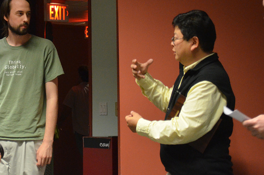
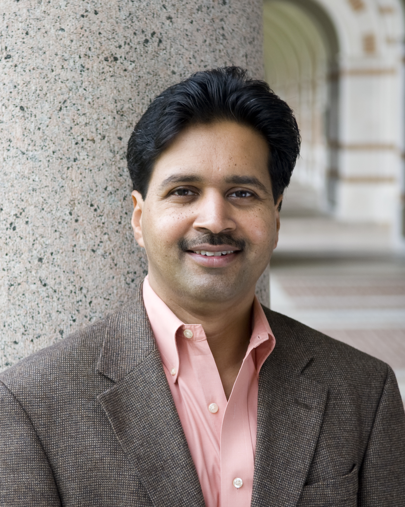
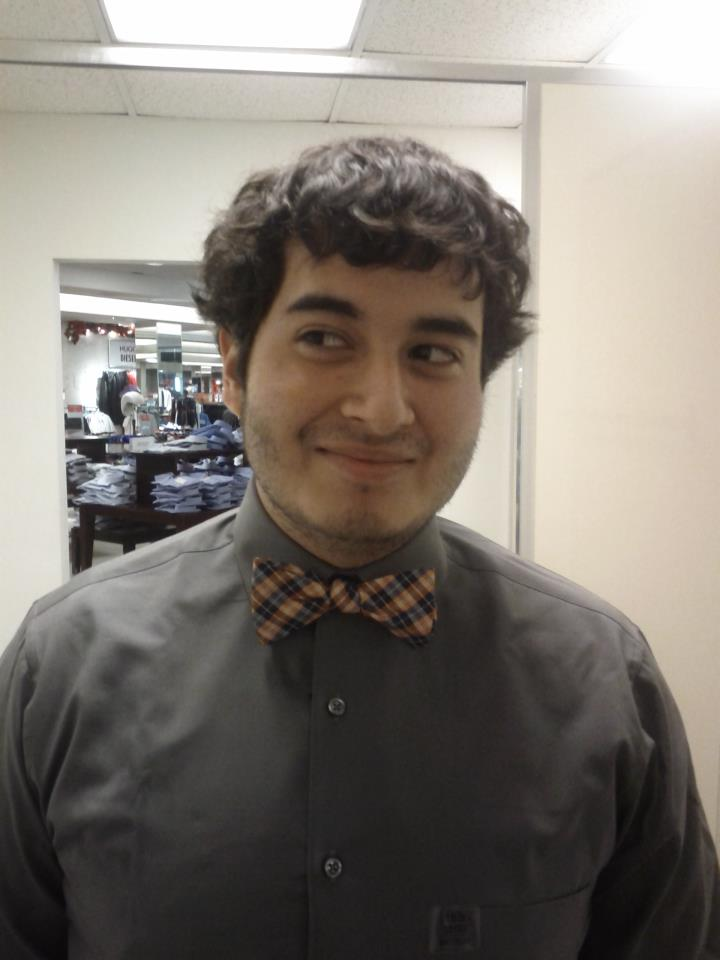
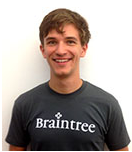
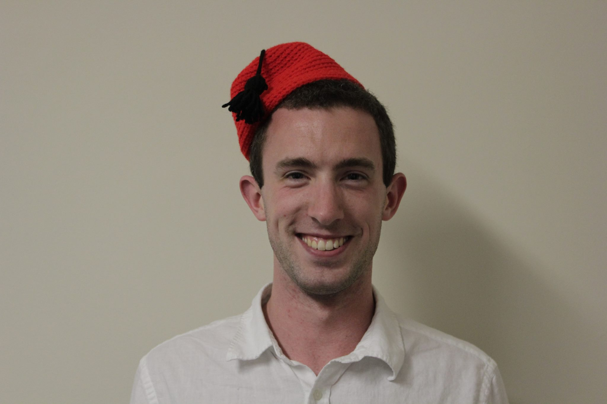

Judges
 Stephen Wong - Rice University professor
Dr. Stephen Wong is a physicist and computer scientist who, as a Howard Hughes Fellow, received his Ph.D. in experimental solid state physics from M.I.T. in 1988 and worked at Bell Labs with to-be-Nobel Laureate Steven Chu and Hughes Research Labs on high temperature superconductors and engineered bandgap materials before entering academia. In the last 20 years, Dr. Wong has taught physics, mathematics and computer science. He has published numerous papers and run many seminars on object-oriented programming and design and C.S. pedagogy. At Rice, he pioneered COMP 410, an experientially-driven, discovery-learning process software engineering course where students are placed in realistic software engineering situations that require solutions using state-of-the-art design, information management and project management skills.
 Vivek Sarkar - Rice University professor
Vivek Sarkar is Professor and Chair of Computer Science at Rice University, where he holds the E.D. Butcher Chair in Engineering. He conducts research in multiple aspects of parallel software including programming languages, program analysis, compiler optimizations and runtimes for parallel and high performance computer systems. He currently leads the Habanero Extreme Scale Software Research group at Rice University, and serves as Associate Director of the NSF Expeditions Center for Domain-Specific Computing. He teaches the undergraduate class on Fundamentals of Parallel Programming in the spring semesters, and an advanced graduate class in the fall semesters.
 Britt Antley - Chevron
Britt Antley - Chevron
Britt Antley graduated from Rice University with a BSEE (2009) and MEE (2013). He currently works for Chevron as a Technical Analyst, supporting .NET WPF applications used by engineers for compressor optimization. Britt is also active in recruiting at Rice University, striving to bring more Owls over to Chevron.
 Brandon Wallace - Palladium Consulting
Brandon Wallace - Palladium Consulting
Brandon Wallace attended Rice when it was affordable and has spent over two decades designing and implementing software systems for the finance and energy sectors. He has been with Palladium Consulting since 2008, where he is both an exceptionally creative high level architect and a tenacious tunnel rat coder, capable of designing clever, delightful systems and ruthlessly subduing less clever ones. He's been known to hack on games and build bots in his spare time, with hundreds of thousands of people downloading his mods and patches.
 Yilong Yao - Google
Yilong Yao - Google
Yilong Yao graduated from Rice in 2011 (Sid Rich!) majoring in ECE. He currently works in Ads Infrastructure at Google as a Software Engineer in Test. In his free time, he enjoys hiking, biking, and watching TV.
 Frank Salinas - Microsoft
Frank was CS Club president last year (2012-2013), and helped organize Hack Rice 2013!
 Andy Enkeboll - Venmo
Andy is a die-hard Vanderbilt Commodores fan, where he studied Computer Engineering. Previously a high school math teacher, he is currently studying Data Science at Columbia University and is probably at a concert (or a hackathon) right now.
 Max Grossman - Delphix
Max Grossman graduated with a B.S. in C.S. in 2012 and an M.S. in 2013. Following graduation, he joined Delphix as a dev and has been working there for the past 7 months. Delphix is a small-but-growing technology company building git-like tools for managing large-scale databases. At Delphix, Max's work has included new features and performance enhancements for the Delphix OS (a branch of Solaris) and ZFS, distributed management of replicated data in the Java application stack, and development on internal VM management tools.
 Timothy Roberts - Schlumberger
Timothy Roberts - Schlumberger
Dr. Timothy Roberts is the lead architect for Schlumberger’s production software group – covering production engineering, operations and economics.
He received a degree in Theoretical Physics (1st class) from the University of Manchester and a PhD in Computer Vision from the University of Dundee.
During his research career his primary interests were in statistical models and efficient estimation methods for complex visual problems such as tracking people – think XBOX Kinetic!
In his career with Schlumberger, Tim has worked to address the challenges of building large, integrated systems to understand and optimize oil and gas production.
Tim dreams of a time when software works seamlessly and disappears….
 Nate Andre - Epic
Nate Andre - Epic
Nate Andre is a software developer at Epic working on the EpicCare Ambulatory application. He received his B.S. in Computer Science at Ohio University. Past projects at Epic include Telemedicine, E-signatures, and third-party Document Management System integration. Currently he is working on generating communications from already entered data to make it easier for providers to communicate with their colleagues and patients.
Tim Harvey - Texas Instruments
Tim Harvey is a Texas Instruments engineer.